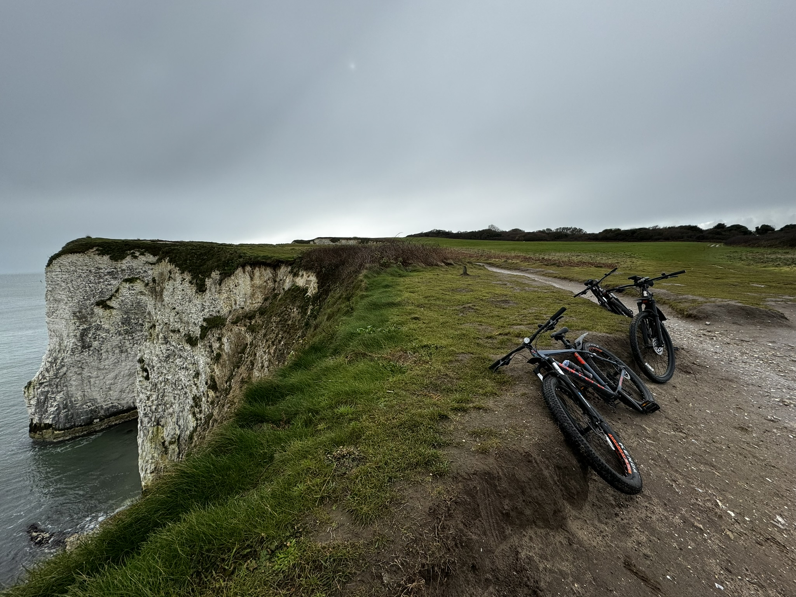

// OFF_DUTY_LOG: SUB_ROUTINES
When disconnected from compilation environments and custom engine development, system resources are reallocated toward manual engineering, physical optimization, and creative media capturing.

[MECHANICAL_OPTIMIZATION]
Mountain Biking
Engaging with physical trail tracking and structural bike maintenance. Focuses on trail execution, hydraulic system bleeding, and precision mechanical component management.

[ANALOG_EXECUTION]
Tactile Hobbies
Exploring manual, fine-motor skill sets outside digital logic constraints. Active focus areas include practicing cardistry cuts and working with physical mediums like whittling and small-scale woodworking.
// VISUAL_DATA_LOGS